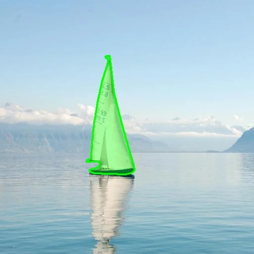
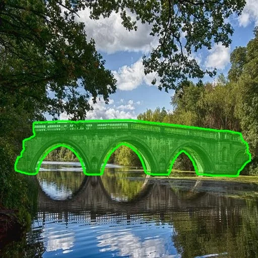
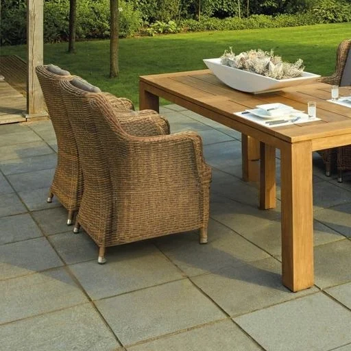
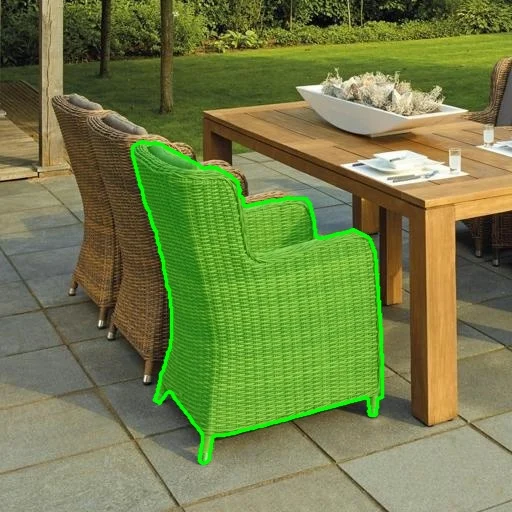
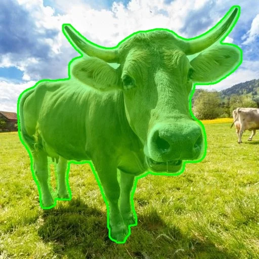
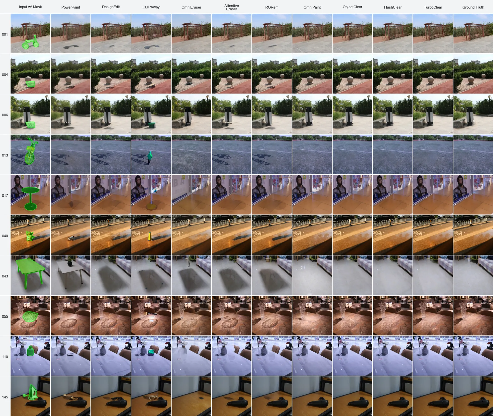
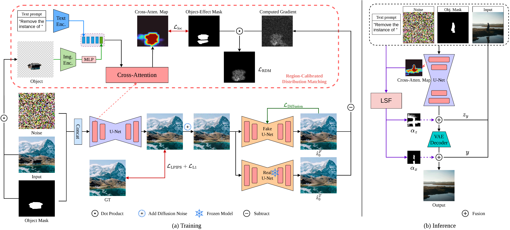
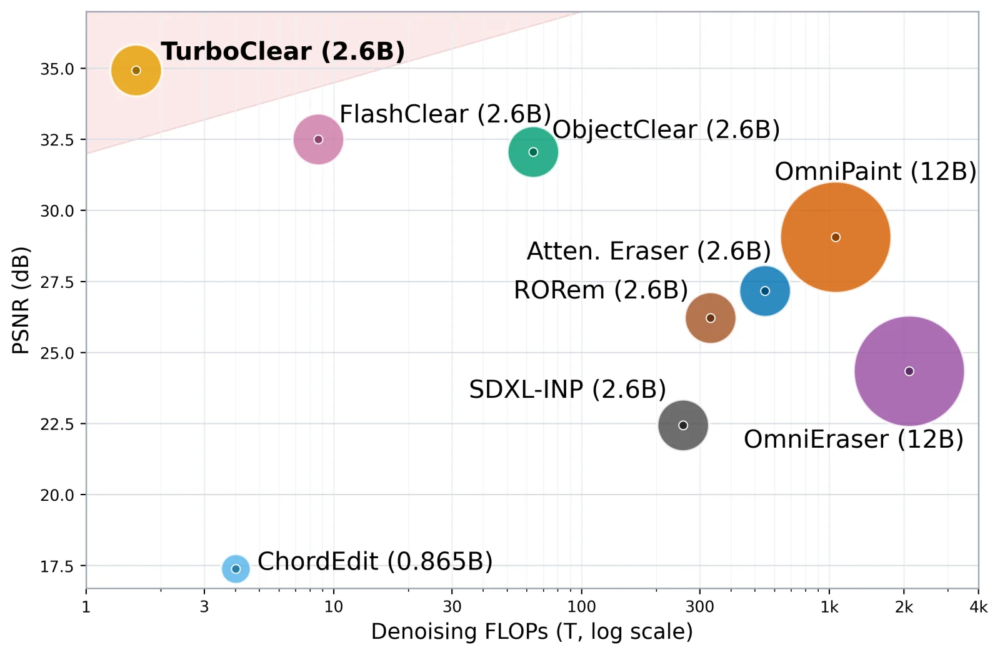

One-step object-effect removal
TurboClear
One-Step Object-Effect Removal via Region-Calibrated Distribution Matching and Fusion
1 Shanghai Jiao Tong University 2 Honor Device Co., Ltd 3 Imperial College London
† Corresponding authors
Remove the target object, its shadow, reflection, and other visual effects in a single denoising step while keeping unaffected regions intact.

Drag each divider to inspect the input and result.
1denoising step
1.589 Tdenoising FLOPs on OBER-Test
40.04×less computation than ObjectClear
665×less computation than OmniPaint
Why TurboClear
Edit what matters. Preserve what does not.
Object removal must reconstruct areas influenced by the target while leaving unrelated content unchanged. Generic one-step objectives do not explicitly model this spatial asymmetry, which can leave residual effects or introduce unnecessary background changes.
TurboClear couples Region-Calibrated Distribution Matching with Learnable Spatial Fusion. The resulting SDXL-based student preserves the teacher's asymmetric edit-and-preserve behavior while reducing iterative diffusion inference to one step.
Qualitative results
Objects disappear. Structure stays.
Examples selected from the qualitative comparison in the paper.




Method
Region-aware distillation, spatially learned fusion

Efficiency
Quality without the iterative cost
TurboClear reaches the strongest PSNR in the comparison while using substantially fewer denoising FLOPs than multi-step diffusion removal systems. Bubble area denotes model parameter count.

Resources
Release status
- Paper
- TBD
- Model weights
- TBD
- Code
- TBD
- Usage guide
- TBD